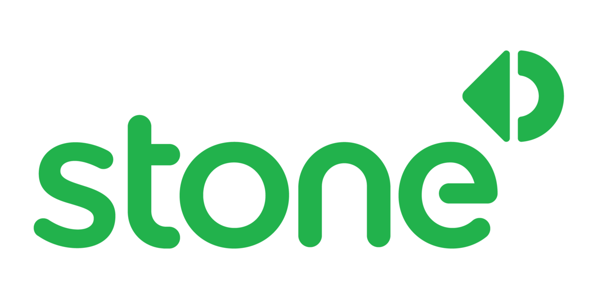

Quem apoiou o início do Projeto


Uma Code Academy de formação acelerada, com excelência, sem fins lucrativos, que contrata e remunera talentos como aspirantes a devs para que se desenvolvam trabalhando em projetos reais em conexão direta com empresas e com o mercado de trabalho. Os Aspirantes Edtech recebem formação acelerada de excelência com conteúdos técnicos de trilha web. Eles também recebem remuneração e a garantia de contratação por grandes empresas de tecnologia. Além disso, também receberão curso de soft skills e inglês.
01 |
02 |
03 |
04 |
05 |
06 |
| São três Ciclos com seis meses de duração cada. | Soluções que geram oportunidades, já que remunera os aspirantes para aprender em tempo integral. | O desenvolvimento de soft skills é importantíssimo e o contato com empresas acontece desde o ínicio das trilhas. | O começo é 100% digital, com aulas e exercícios diários. | Editais nacionais e internacionais e incentivos fiscais dão mais sustentabilidade para o modelo de negócios. | Processo seletivo barra alta e profissionais experientes que já trabalharam com público em vulnerabilidade. |